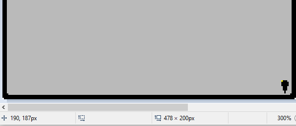
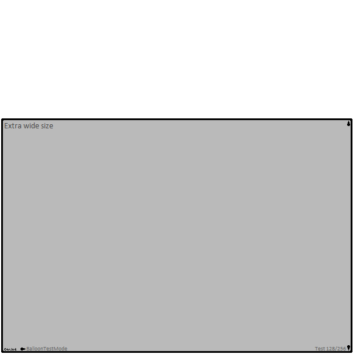

Did you know that you can set negative coordinates for all the pieces of your balloons? That might not sound too helpful straight away, but let me explain.
Let's say you want to position the down arrow for your balloon. The balloon is 200px tall, the arrow itself is 9px tall, the border of the balloon is 3px thick, and you want a 1px gap between the arrow and the balloon border. The coordinates you write will always be at the top left corner of whatever you're placing (there is one exception but it's not important here), so this means you would want to put the Y of the arrow at 187.
In this image, I'm using MS Paint to show the coordinate the arrow is placed at. You can't see the mouse, but the pixel at the top left of the arrow highlighted in yellow is where the cursor was pointing. You can see the Y coordinate in the bottom left says 187.
This method works fine! However, nearly every balloon has at least two sizes, the second one being taller. Let's say the second balloon is 400px tall. If you leave your arrow where it is, it'll be halfway up the balloon when using the bigger size! But of course, there is a simple enough fix. All you have to do is create a special config file which affects just that bigger balloon, and add 200 to the Y value of your arrow. So the Y value for the new arrow would be 387.
But that's a bit of a pain, isn't it? Having special config files for both left and right facing balloons, both the kero and the sakura, etc... And the example above is really easy because I added a round 200px to the balloon, rather than increasing it by an odd amount. Some balloons have to reposition the arrows manually for each size. Is there a better way? Yes there is, if you plan your balloon right!
So first of all, there are two different ways to write negative coordinates. If you want true negative coordinates, you write the value with two minus signs, such as --20. This would position your arrow 20px above the edge of the canvas. Not usually desirable, but there are some niche cases where this can be useful. More useful, though, is if you write a value with one minus sign, like -20. What this does is count back from the opposite side of the canvas! So if it's a Y value, it will start at the bottom of the canvas and go up. If it's an X value, it'll start from the right side of the canvas and move left.
In that example I gave above, if you wrote it with negative coordinates, the Y value would be -13. Ok, so what's the big deal about that? It's just another way of writing it, right? Ah, but you see, this changes everything. So long as the edge of the balloon and its position relative to the edges of the canvas never changes, you will never need to specify another Y coordinate for this arrow! No matter how tall the balloon is, it'll always be 13px up from the bottom.
I've prepared an example balloon to show this off, which you can download here. If you look in the balloon there are 4 different sizes you can try out, but there are no special config files at all. The online marker, SSTP marker, SSTP message, number message, and arrows all use these negative coordinates, which means everything is automatically placed for me no matter what size balloon I make.
Go ahead and try editing one of the images to make a bigger balloon of an odd size! So long as the border of the balloon is always 3px thick and touching all the edges of the canvas, it will just handle all of it. Using this method, creating new sizes for your balloons can be so much easier! You just have to ensure that the edge of the balloon is always the same distance from the edge of the canvas for each size you make.